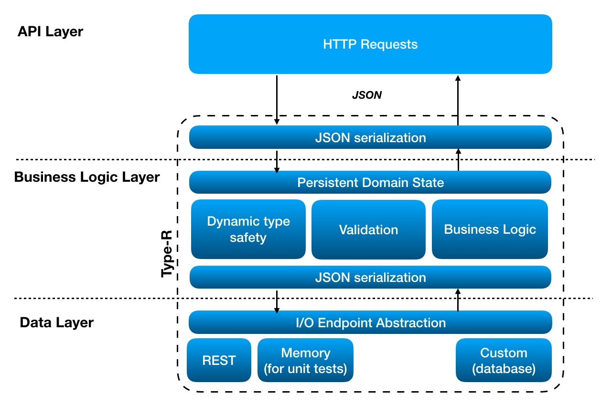

Getting started
Overview
Type-R is the JS model framework helping to define and manage the complex application state as a combination of reusable parts. Type-R cover the needs of business logic and data layers in 3-tier application architecture, providing the presentation layer with the unified technique to handle the UI and domain state. Type-R data structures look and feel (and, in some aspects, behaves) more like classes in the statically typed languages.
Type-R in unopinionated on the way how an application state should be managed ("single source of truth" or "distributed state"). It can support all approaches equally well being not dependent on singletons and having powerful capabilities for state synchronization.

State is defined as a superposition of typed records and collections. Record is a class with known set of attributes of predefined types possibly holding other records and collections in its attributes, describing the data structure of an arbitrary complexity. Record with its attributes forms an aggregation tree with deeply observable attributes changes. Attribute types are checked on assignments and invalid changes are being rejected, therefore it is guaranteed that the application state will preserve the valid shape.
Application state defined with Type-R is serializable to JSON by default. Aggregation tree of records and collections is mapped in JSON as a tree of plain objects and arrays. Normalized data represented as a set of collections of records cross-referencing each other are supported as first-class serialization scenario.
Record may have an associated IOEndpont representing the I/O protocol for CRUD and collection fetch operations which enables the persistence API for the particual record/collection class pair. Some useful endpoints (restfulIO, localStorageIO, etc) are provided by type-r/endpoints/* packages, and developers can define their own I/O endpoints implementing any particular persistence transport or API.
Record attributes may have custom validation rules attached to them. Validation is being triggered transparently on demand and its result is cached across the record/collection aggregation tree, making subsequent calls to the validation API extremily cheap.
All aspects of record behavior including serialization and validation can be controlled on attribute level with declarative definitions combining attribute types with metadata. Attribute definitions ("metatypes") can be reused across different models forming the domain-specific language of model declarations. Some useful attribute metatypes (Email, Url, MicrosoftDate, etc) are provided by type-r/ext-types package.
How Type-R compares to X?
Type-R (former "NestedTypes") project was started in 2014 in Volicon as a modern successor to BackboneJS models, which would match Ember Data in its capabilities to work with a complex state, while retaining the BackboneJS simplicity, modularity, and the some degree of backward API compatibility. It replaced BackboneJS in the model layer of Volicon products, and it became the key technology in Volicon's strategy to gradually move from BackboneJS Views to React in the view layer.
Ember Data is the closest thing to Type-R by its capabilities, with BackboneJS models and collections being the closest thing by the API, and mobx being pretty close in the way how the UI state is managed.
Type-R, however, takes very different approach to all of them:
- Type-R models looks and feels more like classes in a statically typed language with the majority of features being controlled by attribute metadata.
- Type-R is built around the concept of aggregation trees formed by nested records and collections and it knows how to clone, serialize, and validate complex objects with cross-references properly.
- In contract to BackboneJS, Record is not an object hash but the class with statically typed and dynamically checked attributes.
- In contrast to mobx, Type-R detects deeply nested changes.
- In contrast to Ember Data, Type-R doesn't require the singleton global store. In Type-R, stores are a special kind of records and there might be as many dynamically created and disposed stores as you need, starting with no stores at all.
Feature | Type-R | Backbone Models | Ember Data | mobx -|-|-|-|- Observable changes in object graph | ✓ | - | - | ✓ JSON Serialization | ✓ | ✓ | ✓ | - Validation | ✓ | ✓ | ✓ | - Dynamic Type Safety | ✓ | - | for serialization only | - Aggregation | ✓ | - | - | - Relations by id | ✓ | - | ✓ | - Generalized I/O | ✓ | sync function | ✓ | -
Features by example
Here's the brief overview of features groped by application purpose.
Persistent domain state
The basic building block is the Record class. To fetch data from the server, a developer creates the subclass of the Record describing its attribute types and attaches the restfulIO endpoint. It enables the persistence API allowing the developer to fetch the collection from the server. restfulIO expects the server to implement the standard RESTful API expected by BackboneJS models.
GET /api/users- fetch all the usersPOST /api/users- create the userGET /api/users/:id- fetch the user with a given idPUT /api/users/:id- update the user with a given idDELETE /api/users/:id- delete the user with a given id
Record and collection are seralizable to and can be parsed from JSON with no additional effort. A mapping to JSON can be customized for collections, records, and individual attributes. The Record validates all updates casting attribute values to declared attribute types to protect the state strucure from the protocol incompatibilities and improper assignments.
```javascript @define User extends Record { static endpoint = restfulIO( '/api/users' ); static attributes = { name : String, email : String, createdAt : Date } }
const users = new User.Collection(); await users.fetch();
expect( users.first().createdAt ).toBeInstanceOf( Date ); expect( typeof users.toJSON()[ 0 ].createdAt ).toBe( "string" ); ```
```typescript @define User extends Record { static endpoint = restfulIO( '/api/users' );
// Type-R can infer attribute types from TypeScript type annotations.
@type( String ).as name : string
@type( String ).as email : string
@type( Date ).as createdAt : Date
}
const users : Collection
expect( users.first().createdAt ).toBeInstanceOf( Date ); expect( typeof users.toJSON()[ 0 ].createdAt ).toBe( "string" ); ```
UI state and observable changes
Type-R provides the universal technique to working with the UI and domain state. To define the UI state, a developer creates the subclass of the Record with attributes holding all the necessary state data possibly along with the presistent data which can become the part of the same local UI state. The UI state itself can be a part of some particular view or UI component, it can be managed as a singleton ("single source of truth"), or both at the same time. Type-R is unopinionated on the application state structure leaving this decision to the developer.
Records and collections forms an aggregation tree with deeply observable changes, so it's enough to subscribe to the single change event from the UIState to get updates on both data arrival and local changes of the state attributes. Records and collections can be indefinitely nested to describe a state of an arbitrary complexity. Developer can attach reactions on changes to the records, their individual attributes, and collections. Additional changes made in reactions will be executed in the scope of the same "change transaction" and won't trigger additional change events.
```javascript @define UIState extends Record { static attributes = { users : User.Collection, selectedUser : from( 'users' ) } }
const uiState = new UIState();
uiState.on( 'change', () => { console.log( 'Something is changed' ); updateUI(); });
uiState.users.fetch(); ```
```typescript
@define UIState extends Record {
// For collections and more complex types attribute type must be provided explicitly
@type( User.Collection ).as users : Collection
@from( 'users' ).as selectedUser : User
}
const uiState = new UIState();
uiState.on( 'change', () => { console.log( 'Something is changed' ); updateUI(); });
uiState.users.fetch(); ```
Validation
Type-R supports validation as attribute-level checks attached to attribute definitions as a metadata. Attribute type together with checks forms an "attribute metatype", which can be defined separately and reused across multiple record definitions.
Validation rules are evaluated recursively on the aggregation tree on first access to the validation API, and validations results are cached in records and collections across the tree till the next update. The validation is automatic, subsequent calls to the validation API are cheap, and developer don't need to manually trigger the validation on data changes.
The majority of checks in a real application will be a part of attribute "metatypes", while the custom validation can be also defined on the Record and Collection level to check data integrity and cross-attributes dependencies.
```javascript const Email = type( String ) .check( x => !x || x.indexOf( '@' ) >= 0, "Doesn't look like an email" );
@define User extends Record { static endpoint = restfulIO( '/api/users' ); static attributes = { name : type( String ).required, email : type( Email ).required, createdAt : type( Date ).check( x => x.getTime() <= Date.now() ) } }
const users = new User.Collection(); users.add({ email : 'john' }); expect( users.isValid() ).toBe( false ); expect( users.first().isValid() ).toBe( false );
users.first().name = "John"; users.first().email = "john@ny.com"; expect( users.isValid() ).toBe( true ); ```
```typescript const Email = type( String ) .check( x => !x || x.indexOf( '@' ) >= 0, "Doesn't look like an email" );
@define User extends Record { static endpoint = restfulIO( '/api/users' );
// @type(...).as converts Type-R attribute type definition to the TypeScript decorator.
@type( String ).required.as
name : string
@type( Email ).required.as
email : string
@type( Date ).check( x => x.getTime() <= Date.now() ).as
createdAt : Date
}
const users = new User.Collection(); users.add({ email : 'john' }); expect( users.isValid() ).toBe( false ); expect( users.first().isValid() ).toBe( false );
users.first().name = "John"; users.first().email = "john@ny.com"; expect( users.isValid() ).toBe( true ); ```
Installation and requirements
Is packed as UMD and ES6 module. No peer dependencies are required.
npm install type-r --save-dev
ReactJS bindings
React-MVx is an glue framework which uses Type-R to manage the UI state in React and the NestedLink library to implement two-way data binding. React-MVx provides the complete MVVM solution on top of ReactJS, featuring:
- Type-R Record to manage the local component's state.
- two-way data binding for UI and domain state.
- Hassle-free form validation (due to the combination of features of Type-R and NestedLink).
- Type-R type annotation used to define component props and context.
Usage with NodeJS
Type-R can be used at the server side to build the business logic layer by defining the custom I/O endpoints to store data in database. Type-R dynamic type safety features are particularly advantageous when schema-less JSON databases (like Couchbase) are being used.
